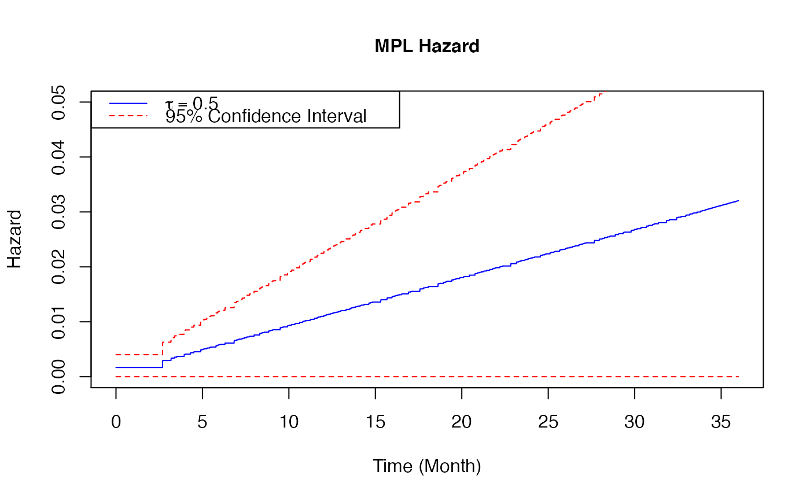

Plot a baseline hazard estimates from coxph_mpl_dc Object
plot.coxph_mpl_dc.RdPlot the baseline hazard with the confidence interval estimates
# S3 method for coxph_mpl_dc plot( x, parameter = "theta", funtype = "hazard", xout, se = TRUE, ltys, cols, ... )
Arguments
| x | an object inheriting from class |
|---|---|
| parameter | the set of parameters of interest. Indicate |
| funtype | the type of function for ploting, i.e. |
| xout | the time values for the baseline hazard plot |
| se | se=TRUE gives both the MPL baseline estimates and 95% confidence interval plots while se=FALSE gives only the MPL baseline estimate plot. |
| ltys | a line type vector with two components, the first component is the line type of the baseline hazard while the second component is the line type of the 95% confidence interval |
| cols | a colour vector with two components, the first component is the colour of the baseline hazard while the second component is the colour the 95% confidence interval |
| ... | other arguments |
Value
the baseline hazard plot
Details
When the input is of class coxph_mpl_dc and parameters=="theta", the baseline estimates
base on \(\theta\) and xout (with the corresponding 95% confidence interval if se=TRUE ) are ploted.
When the input is of class coxph_mpl_dc and parameters=="gamma", the baseline hazard estimates
based on \(\gamma\) and xout (with the corresponding 95% confidence interval if se=TRUE ) are ploted.
References
Brodaty H, Connors M, Xu J, Woodward M, Ames D. (2014). "Predictors of institutionalization in dementia: a three year longitudinal study". Journal of Alzheimers Disease 40, 221-226.
Xu J, Ma J, Connors MH, Brodaty H. (2018). "Proportional hazard model estimation under dependent censoring using copulas and penalized likelihood". Statistics in Medicine 37, 2238–2251.
See also
Examples
# \donttest{ library(copula) library(survival) library(splines2) ##-- Copula types copula1 <- 'clayton' copula2 <- 'gumbel' copula3 <- 'frank' copula4 <- 'independent' ##-- A real example ##-- One dataset from Prospective Research in Memory Clinics (PRIME) study ##-- Refer to article Brodaty et al (2014), ## the predictors of institutionalization of dementia patients over 3-year study period data(PRIME) surv=as.matrix(PRIME[,1:3]) #time, event and dependent censoring indicators cova=as.matrix(PRIME[, -c(1:3)]) #covariates colMeans(surv[,2:3]) #the proportions of event and dependent censoring#> Event Depcen #> 0.2675815 0.2504288#> [1] 583#> [1] 15names(PRIME)#> [1] "Time" "Event" "Depcen" "Age" #> [5] "Gender" "HighEdu" "Alzheimer" "CDR_base" #> [9] "MMSE_base" "SMAF_base" "ZBI_base" "NPI_base" #> [13] "Benzon" "Antiphsy" "LivingAlone" "MMSE_change_3m" #> [17] "SMAF_change_3m" "NPI_change_3m"##-- Selecting number of knots under independent censoring assumption using AIC vs binCounts plot min.binCount=20 max.binCount=200 incr.binCount=20 binCounts <- seq(min.binCount, max.binCount, incr.binCount) bn <- length(binCounts) aics<-rep(0, bn) for (j in 1:bn) { control=coxph_mpl_dc.control(ordSp = 4, binCount = binCounts[j], tie = 'Yes', tau = 0, copula = copula4, pent = 'penalty_mspl', smpart = 0, penc = 'penalty_mspl', smparc = 0, maxit2 = 100, maxit = 5000, mid = 1, asy = 0, ac = 1, cv = 0, ac.theta = 1e-5, ac.gamma = 1e-5, ac.Utheta = -1e-2, ac.Ugamma = -1e-2, min.theta = 1e-7, min.gamma = 1e-7, min.ht = 1e-7, min.hc = 1e-7, min.St = 1e-7, min.Sc = 1e-7, min.C = 1e-7, min.dC = 1e-7, eps = 1e-5, tol.thga = 1e-5, tol.bph = 1e-5, tol.smpar = 1e-2 ) aics[j]<-coxph_mpl_dc(surv, cova, control)$mpl_aic print(j) }#> 1 smpart = 0 smparc = 0 dft= 33 dfc= 33 iter = 158 #> [1] 1 #> 1 smpart = 0 smparc = 0 dft= 18 dfc= 18 iter = 116 #> [1] 2 #> 1 smpart = 0 smparc = 0 dft= 13 dfc= 13 iter = 82 #> [1] 3 #> 1 smpart = 0 smparc = 0 dft= 11 dfc= 11 iter = 221 #> [1] 4 #> 1 smpart = 0 smparc = 0 dft= 9 dfc= 9 iter = 95 #> [1] 5 #> 1 smpart = 0 smparc = 0 dft= 8 dfc= 8 iter = 145 #> [1] 6 #> 1 smpart = 0 smparc = 0 dft= 8 dfc= 8 iter = 165 #> [1] 7 #> 1 smpart = 0 smparc = 0 dft= 7 dfc= 7 iter = 140 #> [1] 8 #> 1 smpart = 0 smparc = 0 dft= 7 dfc= 7 iter = 142 #> [1] 9 #> 1 smpart = 0 smparc = 0 dft= 6 dfc= 6 iter = 202 #> [1] 10##--MPL estimate Cox proportional hazard model for institutionalization under medium positive ##--dependent censoring control <- coxph_mpl_dc.control(ordSp = 4, binCount = binCount, tie = 'Yes', tau = 0.5, copula = copula3, pent = 'penalty_mspl', smpart = 'REML', penc = 'penalty_mspl', smparc = 'REML', maxit2 = 100, maxit = 5000, mid = 1, asy = 1, ac = 1, cv = 1, ac.theta = 1e-5, ac.gamma = 1e-5, ac.Utheta = -1e-2, ac.Ugamma = -1e-2, min.theta = 1e-7, min.gamma = 1e-7, min.ht = 1e-7, min.hc = 1e-7, min.St = 1e-7, min.Sc = 1e-7, min.C = 1e-7, min.dC = 1e-7, eps = 1e-5, tol.thga = 1e-5, tol.bph = 1e-5, tol.smpar = 1e-2 ) coxMPLests_tau <- coxph_mpl_dc(surv=surv, cova=cova, control=control, )#> 1 smpart = 13454090 smparc = 55489476 dft= 6 dfc= 6 iter = 201 #> 2 smpart = 159670298 smparc = 70424878 dft= 4.050809 dfc= 3.923666 iter = 907 #> 3 smpart = 10966018259 smparc = 78333352 dft= 3.370491 dfc= 3.875549 iter = 720 #> 4 smpart = 1.736158e+12 smparc = 77751671 dft= 3.008066 dfc= 3.847774 iter = 12 #> 5 smpart = 1.858718e+12 smparc = 77797590 dft= 3.000051 dfc= 3.85007 iter = 3 #> 6 smpart = 1.858935e+12 smparc = 77793949 dft= 3.000048 dfc= 3.84989 iter = 1 #> 7 smpart = 1.858936e+12 smparc = 77794237 dft= 3.000048 dfc= 3.849904 iter = 1 #> 8 smpart = 1.858936e+12 smparc = 77794214 dft= 3.000048 dfc= 3.849903 iter = 1 #> 9 smpart = 1.858936e+12 smparc = 77794216 dft= 3.000048 dfc= 3.849903 iter = 1 #> 10 smpart = 1.858936e+12 smparc = 77794216 dft= 3.000048 dfc= 3.849903 iter = 1 #> 11 smpart = 1.858936e+12 smparc = 77794216 dft= 3.000048 dfc= 3.849903 iter = 1 #> 12 smpart = 1.858936e+12 smparc = 77794216 dft= 3.000048 dfc= 3.849903 iter = 1 #> 13 smpart = 1.858936e+12 smparc = 77794216 dft= 3.000048 dfc= 3.849903 iter = 1 #> 14 smpart = 1.858936e+12 smparc = 77794216 dft= 3.000048 dfc= 3.849903 iter = 1 #> 15 smpart = 1.858936e+12 smparc = 77794216 dft= 3.000048 dfc= 3.849903 iter = 1 #> 16 smpart = 1.858936e+12 smparc = 77794216 dft= 3.000048 dfc= 3.849903 iter = 1 #> 17 smpart = 1.858936e+12 smparc = 77794216 dft= 3.000048 dfc= 3.849903 iter = 1 #> 18 smpart = 1.858936e+12 smparc = 77794216 dft= 3.000048 dfc= 3.849903 iter = 1 #> 19 smpart = 1.858936e+12 smparc = 77794216 dft= 3.000048 dfc= 3.849903 iter = 1 #> 20 smpart = 1.858936e+12 smparc = 77794216 dft= 3.000048 dfc= 3.849903 iter = 1 #> 21 smpart = 1.858936e+12 smparc = 77794216 dft= 3.000048 dfc= 3.849903 iter = 1 #> 22 smpart = 1.858936e+12 smparc = 77794216 dft= 3.000048 dfc= 3.849903 iter = 1 #> 23 smpart = 1.858936e+12 smparc = 77794216 dft= 3.000048 dfc= 3.849903 iter = 1 #> 24 smpart = 1.858936e+12 smparc = 77794216 dft= 3.000048 dfc= 3.849903 iter = 1 #> 25 smpart = 1.858936e+12 smparc = 77794216 dft= 3.000048 dfc= 3.849903 iter = 1 #> 26 smpart = 1.858936e+12 smparc = 77794216 dft= 3.000048 dfc= 3.849903 iter = 1 #> 27 smpart = 1.858936e+12 smparc = 77794216 dft= 3.000048 dfc= 3.849903 iter = 1 #> 28 smpart = 1.858936e+12 smparc = 77794216 dft= 3.000048 dfc= 3.849903 iter = 1 #> 29 smpart = 1.858936e+12 smparc = 77794216 dft= 3.000048 dfc= 3.849903 iter = 1 #> 30 smpart = 1.858936e+12 smparc = 77794216 dft= 3.000048 dfc= 3.849903 iter = 1 #> 31 smpart = 1.858936e+12 smparc = 77794216 dft= 3.000048 dfc= 3.849903 iter = 1 #> 32 smpart = 1.858936e+12 smparc = 77794216 dft= 3.000048 dfc= 3.849903 iter = 1 #> 33 smpart = 1.858936e+12 smparc = 77794216 dft= 3.000048 dfc= 3.849903 iter = 1 #> 34 smpart = 1.858936e+12 smparc = 77794216 dft= 3.000048 dfc= 3.849903 iter = 1 #> 35 smpart = 1.858936e+12 smparc = 77794216 dft= 3.000048 dfc= 3.849903 iter = 1 #> 36 smpart = 1.858936e+12 smparc = 77794216 dft= 3.000048 dfc= 3.849903 iter = 1 #> 37 smpart = 1.858936e+12 smparc = 77794216 dft= 3.000048 dfc= 3.849903 iter = 1 #> 38 smpart = 1.858936e+12 smparc = 77794216 dft= 3.000048 dfc= 3.849903 iter = 1 #> 39 smpart = 1.858936e+12 smparc = 77794216 dft= 3.000048 dfc= 3.849903 iter = 1 #> 40 smpart = 1.858936e+12 smparc = 77794216 dft= 3.000048 dfc= 3.849903 iter = 1 #> 41 smpart = 1.858936e+12 smparc = 77794216 dft= 3.000048 dfc= 3.849903 iter = 1 #> 42 smpart = 1.858936e+12 smparc = 77794216 dft= 3.000048 dfc= 3.849903 iter = 1 #> 43 smpart = 1.858936e+12 smparc = 77794216 dft= 3.000048 dfc= 3.849903 iter = 1 #> 44 smpart = 1.858936e+12 smparc = 77794216 dft= 3.000048 dfc= 3.849903 iter = 1 #> 45 smpart = 1.858936e+12 smparc = 77794216 dft= 3.000048 dfc= 3.849903 iter = 1 #> 46 smpart = 1.858936e+12 smparc = 77794216 dft= 3.000048 dfc= 3.849903 iter = 1 #> 47 smpart = 1.858936e+12 smparc = 77794216 dft= 3.000048 dfc= 3.849903 iter = 1 #> 48 smpart = 1.858936e+12 smparc = 77794216 dft= 3.000048 dfc= 3.849903 iter = 1 #> 49 smpart = 1.858936e+12 smparc = 77794216 dft= 3.000048 dfc= 3.849903 iter = 1 #> 50 smpart = 1.858936e+12 smparc = 77794216 dft= 3.000048 dfc= 3.849903 iter = 1 #> 51 smpart = 1.858936e+12 smparc = 77794216 dft= 3.000048 dfc= 3.849903 iter = 1 #> 52 smpart = 1.858936e+12 smparc = 77794216 dft= 3.000048 dfc= 3.849903 iter = 1 #> 53 smpart = 1.858936e+12 smparc = 77794216 dft= 3.000048 dfc= 3.849903 iter = 1 #> 54 smpart = 1.858936e+12 smparc = 77794216 dft= 3.000048 dfc= 3.849903 iter = 1 #> 55 smpart = 1.858936e+12 smparc = 77794216 dft= 3.000048 dfc= 3.849903 iter = 1 #> 56 smpart = 1.858936e+12 smparc = 77794216 dft= 3.000048 dfc= 3.849903 iter = 1 #> 57 smpart = 1.858936e+12 smparc = 77794216 dft= 3.000048 dfc= 3.849903 iter = 1 #> 58 smpart = 1.858936e+12 smparc = 77794216 dft= 3.000048 dfc= 3.849903 iter = 1 #> 59 smpart = 1.858936e+12 smparc = 77794216 dft= 3.000048 dfc= 3.849903 iter = 1 #> 60 smpart = 1.858936e+12 smparc = 77794216 dft= 3.000048 dfc= 3.849903 iter = 1 #> 61 smpart = 1.858936e+12 smparc = 77794216 dft= 3.000048 dfc= 3.849903 iter = 1 #> 62 smpart = 1.858936e+12 smparc = 77794216 dft= 3.000048 dfc= 3.849903 iter = 1 #> 63 smpart = 1.858936e+12 smparc = 77794216 dft= 3.000048 dfc= 3.849903 iter = 1 #> 64 smpart = 1.858936e+12 smparc = 77794216 dft= 3.000048 dfc= 3.849903 iter = 1 #> 65 smpart = 1.858936e+12 smparc = 77794216 dft= 3.000048 dfc= 3.849903 iter = 1 #> 66 smpart = 1.858936e+12 smparc = 77794216 dft= 3.000048 dfc= 3.849903 iter = 1 #> 67 smpart = 1.858936e+12 smparc = 77794216 dft= 3.000048 dfc= 3.849903 iter = 1 #> 68 smpart = 1.858936e+12 smparc = 77794216 dft= 3.000048 dfc= 3.849903 iter = 1 #> 69 smpart = 1.858936e+12 smparc = 77794216 dft= 3.000048 dfc= 3.849903 iter = 1 #> 70 smpart = 1.858936e+12 smparc = 77794216 dft= 3.000048 dfc= 3.849903 iter = 1 #> 71 smpart = 1.858936e+12 smparc = 77794216 dft= 3.000048 dfc= 3.849903 iter = 1 #> 72 smpart = 1.858936e+12 smparc = 77794216 dft= 3.000048 dfc= 3.849903 iter = 1 #> 73 smpart = 1.858936e+12 smparc = 77794216 dft= 3.000048 dfc= 3.849903 iter = 1 #> 74 smpart = 1.858936e+12 smparc = 77794216 dft= 3.000048 dfc= 3.849903 iter = 1 #> 75 smpart = 1.858936e+12 smparc = 77794216 dft= 3.000048 dfc= 3.849903 iter = 1 #> 76 smpart = 1.858936e+12 smparc = 77794216 dft= 3.000048 dfc= 3.849903 iter = 1 #> 77 smpart = 1.858936e+12 smparc = 77794216 dft= 3.000048 dfc= 3.849903 iter = 1 #> 78 smpart = 1.858936e+12 smparc = 77794216 dft= 3.000048 dfc= 3.849903 iter = 1 #> 79 smpart = 1.858936e+12 smparc = 77794216 dft= 3.000048 dfc= 3.849903 iter = 1 #> 80 smpart = 1.858936e+12 smparc = 77794216 dft= 3.000048 dfc= 3.849903 iter = 1 #> 81 smpart = 1.858936e+12 smparc = 77794216 dft= 3.000048 dfc= 3.849903 iter = 1 #> 82 smpart = 1.858936e+12 smparc = 77794216 dft= 3.000048 dfc= 3.849903 iter = 1 #> 83 smpart = 1.858936e+12 smparc = 77794216 dft= 3.000048 dfc= 3.849903 iter = 1 #> 84 smpart = 1.858936e+12 smparc = 77794216 dft= 3.000048 dfc= 3.849903 iter = 1 #> 85 smpart = 1.858936e+12 smparc = 77794216 dft= 3.000048 dfc= 3.849903 iter = 1 #> 86 smpart = 1.858936e+12 smparc = 77794216 dft= 3.000048 dfc= 3.849903 iter = 1 #> 87 smpart = 1.858936e+12 smparc = 77794216 dft= 3.000048 dfc= 3.849903 iter = 1 #> 88 smpart = 1.858936e+12 smparc = 77794216 dft= 3.000048 dfc= 3.849903 iter = 1 #> 89 smpart = 1.858936e+12 smparc = 77794216 dft= 3.000048 dfc= 3.849903 iter = 1 #> 90 smpart = 1.858936e+12 smparc = 77794216 dft= 3.000048 dfc= 3.849903 iter = 1 #> 91 smpart = 1.858936e+12 smparc = 77794216 dft= 3.000048 dfc= 3.849903 iter = 1 #> 92 smpart = 1.858936e+12 smparc = 77794216 dft= 3.000048 dfc= 3.849903 iter = 1 #> 93 smpart = 1.858936e+12 smparc = 77794216 dft= 3.000048 dfc= 3.849903 iter = 1 #> 94 smpart = 1.858936e+12 smparc = 77794216 dft= 3.000048 dfc= 3.849903 iter = 1 #> 95 smpart = 1.858936e+12 smparc = 77794216 dft= 3.000048 dfc= 3.849903 iter = 1 #> 96 smpart = 1.858936e+12 smparc = 77794216 dft= 3.000048 dfc= 3.849903 iter = 1 #> 97 smpart = 1.858936e+12 smparc = 77794216 dft= 3.000048 dfc= 3.849903 iter = 1 #> 98 smpart = 1.858936e+12 smparc = 77794216 dft= 3.000048 dfc= 3.849903 iter = 1 #> 99 smpart = 1.858936e+12 smparc = 77794216 dft= 3.000048 dfc= 3.849903 iter = 1 #> 100 smpart = 1.858936e+12 smparc = 77794216 dft= 3.000048 dfc= 3.849903 iter = 1plot(x = coxMPLests_tau, parameter = "theta", funtype="hazard", xout = seq(0, 36, 0.01), se = TRUE, cols=c("blue", "red"), ltys=c(1, 2), type="l", lwd=1, cex=1, cex.axis=1, cex.lab=1, xlab="Time (Month)", ylab="Hazard", xlim=c(0, 36), ylim=c(0, 0.05) )legend( 'topleft',legend = c( expression(tau==0.5), "95% Confidence Interval"), col = c("blue", "red"), lty = c(1, 2), cex = 1)plot(x = coxMPLests_tau, parameter = "theta", funtype="cumhazard", xout = seq(0, 36, 0.01), se = TRUE, cols=c("blue", "red"), ltys=c(1, 2), type="l", lwd=1, cex=1, cex.axis=1, cex.lab=1, xlab="Time (Month)", ylab="Hazard", xlim=c(0, 36), ylim=c(0, 1.2) )legend( 'topleft', legend = c( expression(tau==0.5), "95% Confidence Interval"), col = c("blue", "red"), lty = c(1, 2), cex = 1 )plot(x = coxMPLests_tau, parameter = "theta", funtype="survival", xout = seq(0, 36, 0.01), se = TRUE, cols=c("blue", "red"), ltys=c(1, 2), type="l", lwd=1, cex=1, cex.axis=1, cex.lab=1, xlab="Time (Month)", ylab="Hazard", xlim=c(0, 36), ylim=c(0, 1) )legend( 'bottomleft', legend = c( expression(tau==0.5), "95% Confidence Interval"), col = c("blue", "red"), lty = c(1, 2), cex = 1 )# }